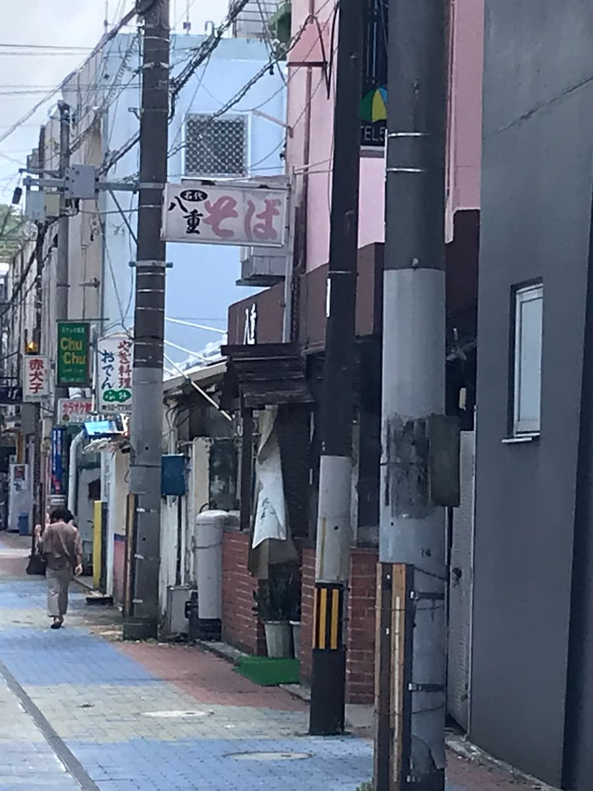
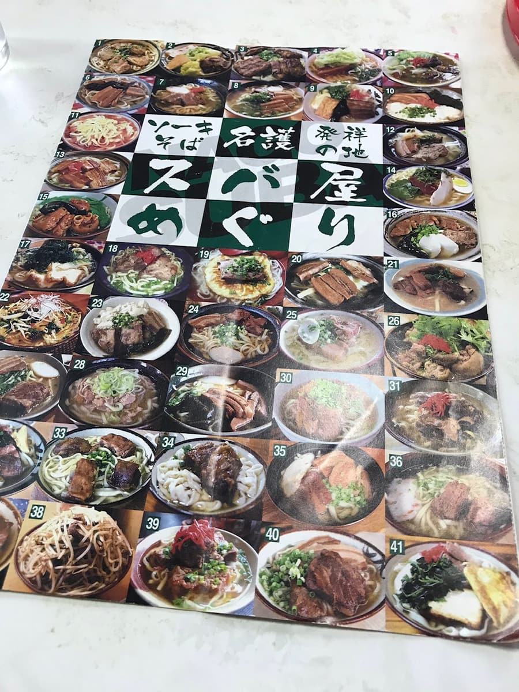
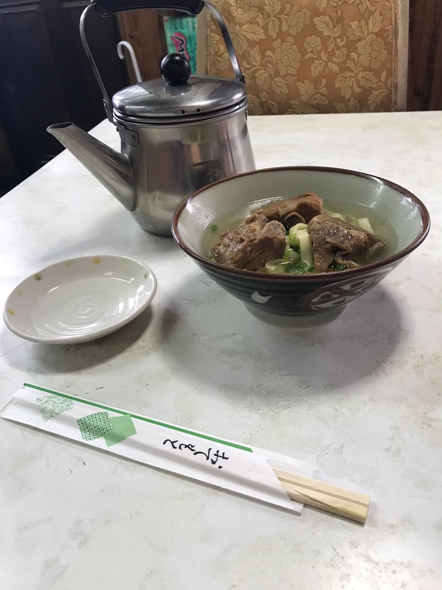

'나고시 소바 맵'에 소개되어 있어서 2020년 7월에 먹었습니다😄


맵에 사진과 함께 소개되어 있던 '소키 소바'를 주문

이 가게의 특징은, 그릇에 국물 없는 면과 고명만 담겨 테이블에 놓이고, 국물은 주전자로 가져다준다는 점입니다^^; 이 시스템은 야에 쇼쿠도뿐이죠😁 국물은 투명한 가쓰오 육수로 순한 맛입니다. 면은 넓적한 면 타입. 소키도 부드럽고 맛있어요. 국물만 주전자로 나오니까 육수를 듬뿍 마실 수 있네요😄
평가(9점/15점): 국물을 주전자로 가져다주는 스타일의 야에 쇼쿠도는 유명하죠. 꼭 한번 드셔 보세요.
PS: 주차장은 없고, 근처 코인 주차장(200엔)을 이용해야 합니다.
면: ★★★☆☆（3）
수프: ★★★☆☆（3）
토핑: ★★★☆☆（3）